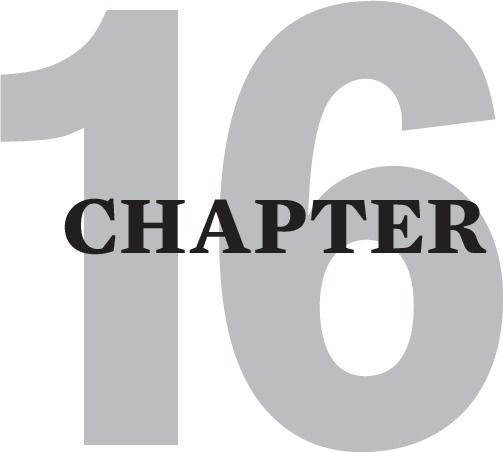

SELF-HELP TOOLS
This chapter is composed of six toolboxes, each with a set of tools to address different recovery issues. Nonetheless, I still value these lists as indispensable adjuncts to my own journey of recovering. I often hand out these lists to clients at appropriate times in their journey. I also give them to students who attend my classes. I have received a great deal of positive feedback about how helpful they have been to enhancing recovery.
My friends and clients whose recovery progresses at the greatest rate are those who supplement their therapy with self-help activities. Those who print out these lists, and carry them around or post them in a conspicuous place until they are deeply ingrained seem to take a quantum leap in their recovery.
I hope that you become immersed in these lists, and that they give you the healing support that I have seen so many others receive from them.
Here’s a poem that I found graffitied on a wall recently. It was signed “Hank”:
your life is your life
don’t let it be clubbed into dank
submission.
be on the watch.
there are ways out.
there is light somewhere.
it may not be much light but
it beats the
darkness.
be on the watch.
the gods will offer you
chances.
know them, take them.
you can’t beat death but
you can beat death in life,
sometimes.
and the more often you
learn to do it,
the more light there will
be.
your life is your life.
know it while you have
it.
you are marvelous
the gods wait to delight
in
you.
Conclusion
In conclusion, you progress in recovering from the multidimensional wounding of Cptsd:
[1] as increasing mindfulness decreases your unconscious 4F acting out,
[2] as your critic shrinks,
[3] as your brain becomes more user-friendly,
[4] as grieving your childhood losses builds your emotional intelligence,
[5] as your body relaxes and your mind becomes more peaceful,
[5] as your healthy ego matures into a healthy sense of self,
[6] as your life narrative becomes self-compassionate and self-affirming,
[7] as your emotional vulnerability creates authentic experiences of intimacy and
[8] as a you attain “good enough” safe relationship.
And let me reemphasize once again that recovery is not an all-or-none phenomenon. It is a gradual process marked by ongoing growth in any of these arenas, and most especially in a decreasing frequency, intensity and duration of flashbacks.
I hope and pray that much sooner than later you will experience an increasing access to the silver linings I described in chapter 4. I hope you sense the ongoing resolution of your developmental arrests. I hope you will notice an increasing kindness to yourself and a pride in the beautiful uniqueness of yourself. I hope you become as fierce in your allegiance to yourself as you need to be to feel that you safely belong to the world. I further hope that the benefits of your improved emotional intelligence will bring you at least one intimate relationship where you can ongoingly discover the benefits of safe and multidimensional relating.